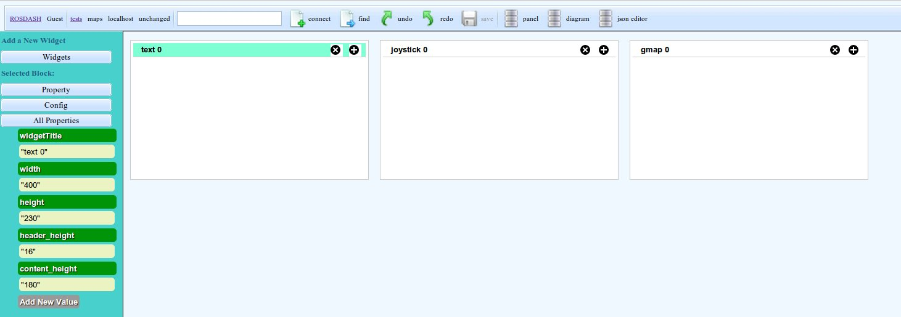
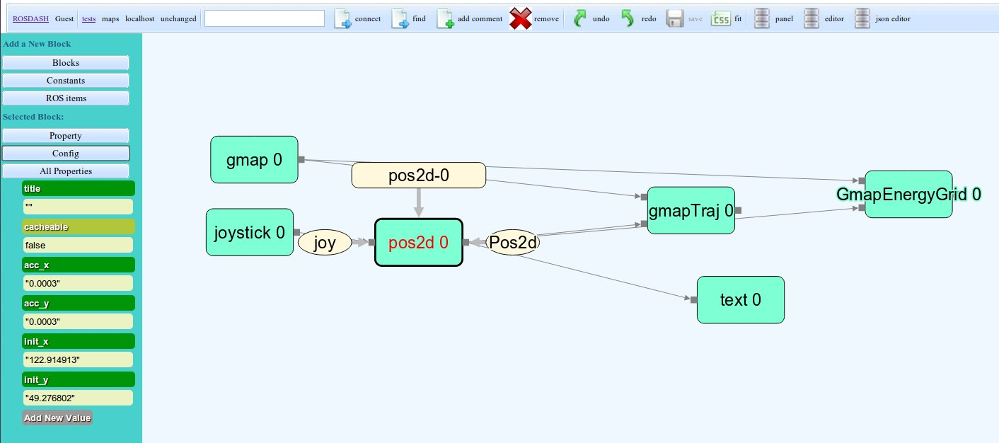
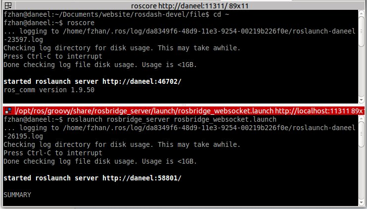
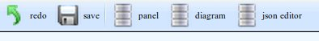
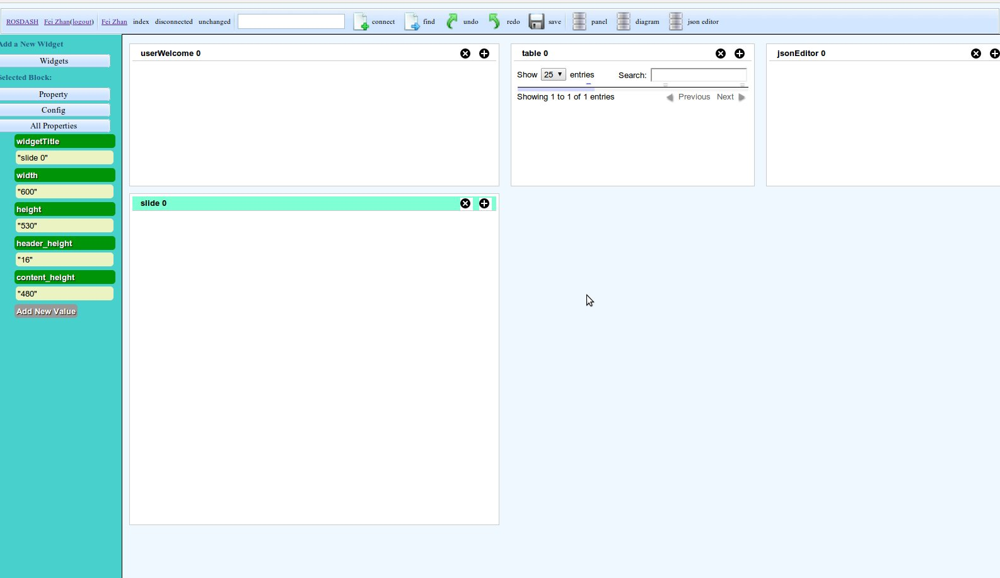
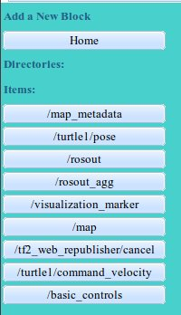
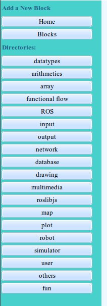
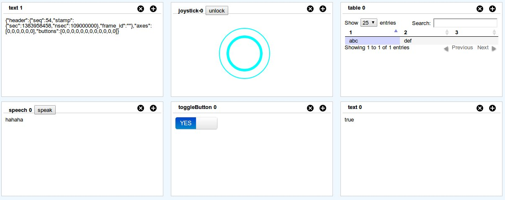
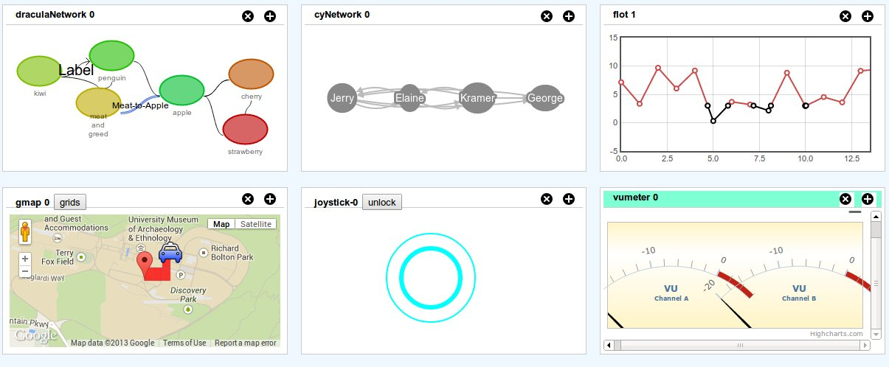
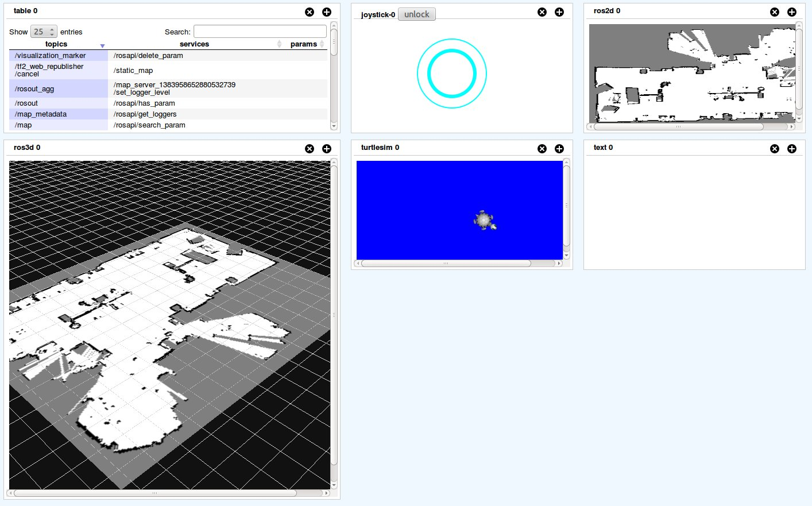

Introduction
Welcome, roboticists and ROS users!
Here is a demostration and debug platform for ROS, which is easy to use and simple to extend.
- Simply open your browser to visualize your robots
- Connect with ROS and communicate with your robots
- Multiple widgets to choose, i.e. plotting tools, Google maps, 3D visualization, etc
- Drag and drop to create a dashboard
- Develop the dashboard with fancy Javascript and HTML5
Usage
In ROSDASH, there are two pages for a dashboard: panel and diagram.
- Panel: it communicates with ROS and your robots, and visualize data from your robots.

- Diagram: blocks and connections between them representing the message relations between.

Steps to use the panel and connect with robots:
- Run roscore and rosbridge in the command line;

- Open the dashboard page in your browser, and specify the ip address of the rosbridge;
- Open the panel page;
- Enjoy it!
How to edit the panel page:
- Open the corresponding editor page;

- Click on Widget button on the sidebar, and choose a widget to add;

- Click on a widget, and modify the height and width on the sidebar;
- Press save button.
How to use the diagram page:
- Open the corresponding diagram page;
- Click on "ROS items" button on the sidebar, and choose a topic, service, or param to add. The topics, services, and params represent messages from your ROS system;

- Click on "blocks" button on the sidebar, and choose a block to add. Most of the blocks represent widgets on the panel page;

- Click on the pins on those blocks, and put a line between them, which represents send the message from ROS to widget;
A list of all widgets available is as follows:
- toggleButton: ;
- joystick: ;
- text: ;
- speech: ;
- table: ;
- chart: ;

- cyNetwork: ;
- arborNetwork: ;
- draculaNetwork: ;
- gmap: ;
- OpenLayersMap: ;
- flot: ;
- vumeter: ;
- UserCamera: ;
- HeadTracker: ;
- HandTracker: ;

- turtlesim: ;
- ros2d: ;
- ros3d: ;
- pr2urdf: ;

- jsonEditor: ;
- jsonVis: ;
- youtube: ;
- slide: ;
- FathomSlide: ;
A list of all blocks available is as follows:
-
datatypes: ;
-
arithmetics: ;
-
array: ;
-
functional flow: ;
-
ROS: ;
-
input: ;
-
output: ;
-
network: ;
-
database: ;
-
drawing: ;
-
multimedia: ;
-
roslibjs: ;
-
maps: ;
-
plot: ;
-
robot: ;
-
simulator: ;
-
user: ;
-
others: ;
Examples
The programming language for the widget development is Javascript. Usually, I design a widget as a class, and put callback functions inside.
The events for callback functions are as follows:
- addWidget: when a widget is added to HTML. We usually append the canvas tags (i.e. < div >, < canvas >, etc.) to the dashboard;
- init: when a widget is initialized. It is envoked after the webpage is created and before the widget is executed. You can do some initialization stuff here;
- runOnce: it is envoked in the first cycle of execution and for only once;
- run: it is envoked in the each cycle of execution;
- other events: i.e. when rosbridge is connected, when the webpage completes, etc.
The information and data for callback functions to use are as follows:
- ROSDASH.userConf: the information of the user (the person who is using the dashboard);
- ROSDASH.dashConf: the information of the dashboard in use;
- ROSDASH.ros: the instance of rosbridge connection;
- ROSDASH.rosConnected: if rosbridge is connected or not;
- ROSDASH.rosNames: names of ros topics, services, and params;
- ROSDASH.msgs: definitions of ros msgs;
- ROSDASH.blockDef: definitions of widgets;
- ROSDASH.blocks: information of blocks in the diagram;
- ROSDASH.requireLoadList: required files, i.e. js files, css files, etc;
- ROSDASH.updateWidgetContent: modify the content of a widget directly.
Dependencies
- dracula
- mjpegcanvasjs
- Highcharts
- JSONSelect
- jquery-ui-1.10.3
- taffydb
- keyboardteleopjs
- underscore
- jsDraw2DX
- bootstrap-switch
- ros3djs
- speak.js
- roslibjs
- js-handtracking-read-only
- d3
- predis
- dhtmlxSuite
- ros2djs
- turtlesimjs
- DataTables
- cytoscape.js-2.0.2
- FlexiJsonEditor
- jquery-2.0.3.min.js
- sDashboard
- fathom
- EaselJS
- flot
- arbor
- openlayers
- nav2djs
- EventEmitter
- headtrackr
- bootstrap
- js-aruco-read-only
- virtualjoystick.js
License
GNU GENERAL PUBLIC LICENSE Version 3, 29 June 2007
Authors
Acknowledgement
Thanks to the support of Prof Richard Vaughan and Autonomy Lab.
The logo of ROSDASH is from the logo of Autonomy Lab.
Todo List
- Undo, redo;Priority 1
- Change widget input and output into better format;Priority 10
- msg type relations;Priority 2
- New block position (follow mouse?);Priority 6
- New pin position;Priority 4
- Add a new pin;Priority 4
- Connect blocks by popups;Priority 6
- Design a uniform representation for network diagram;Priority 3
- Design a uniform representation for plotting;Priority 3